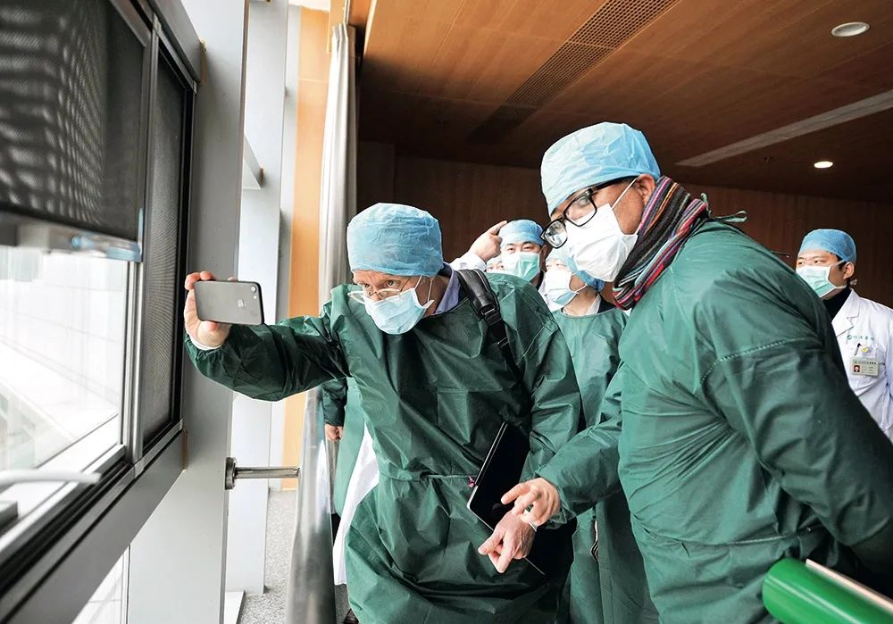
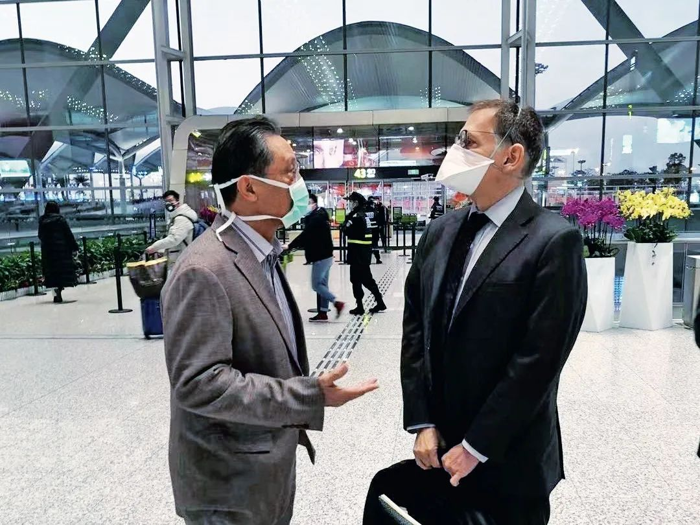

中华预防医学会专家组：“拐点并不是黎明前的黑暗，只相当于夜里12点”
原文链接 备份链接 “疾控要像消防一样，在疫情处置中有决定权、处置权”从大年初六（1月30日）开始，中国疾控中心首任主任、北大公共卫生学院教授李立明再次“出山”，带领一批国内公共卫生领域的骨干们集中办公。他率领的这个团队的名字叫“中华预防 …

疫情从发生到现在，
公共卫生专家、流行病学家在话语权上还比较弱


2月22日至23日，中国-世界卫生组织新冠肺炎联合专家考察组在湖北省开展现场调研。考察组访问了同济医院（光谷院区）、武汉体育中心方舱医院，赴省疾控中心调研湖北省和武汉市新冠肺炎疫情防控、医疗救治等情况，并与省联防联控机制成员单位负责同志和专家进行交流。图/中新
“上医治未病，这就是预防医学的观念”
专访美国加州大学洛杉矶分校公共卫生学院副院长张作风
*本刊记者/李想俣*
*发于2020.3.2总第937期《中国新闻周刊》*
近一个多月来，美国加州大学洛杉矶分校（UCLA）公共卫生学院副院长、流行病学资深终身教授张作风不仅一直关注着国内新冠疫情防控的局势，而且频频就相关问题接受媒体采访，提供自己的观察和专业意见。这位早年在国内曾做过赤脚医生，后来在国际公共卫生领域长期耕耘，并在世卫组织工作过的知名学者，以他对中国国情的深入理解，和对公共卫生问题的国际眼光，在新冠疫情防控和公共卫生事业发展等方面提出了坦率而独特见解。
日前，张作风接受了《中国新闻周刊》的专访。
“疫情数据的透明将起到稳定民心的作用”
中国新闻周刊：在新发传染病疫情的决策中，流行病学家、临床医生、病原学家、行政官员等角色，应该各自承担怎样的职责？
张作风：以美国为例，临床医生和临床实验室人员根据法律要求，将新发疾病识别出来并负责报告给地方政府部门或美国疾病预防控制中心（CDC）。在出现疫情暴发的情况下，当地公共卫生部门的现场流行病学家将进行调查，并采取措施控制疾病传播。如果暴发严重，美国CDC将设立一个由流行病学家、临床医生组成的应急小组，进行调查并控制暴发。同时会通知居民，并采取预防措施。
在流行病暴发的决策过程中，美国总统可以宣布大流行紧急状态，美国CDC和联邦紧急管理机构有标准的详细要求和程序来遵循。
新发传染病疫情的决策中, 主要的决定是由美国卫生与公共服务部（HHS）和美国疾病预防控制中心做出的。通常联邦紧急管理机构（FEMA）会在美国10个大区储存足够紧急物资。
在调查和控制新的传染病暴发中，暴发通常被划分为6个时期: 调查期、识别期、启动期、加速期、减速期，以及下一个大流行的准备期。美国CDC在每个时期采取以下行动，包括：传染性病例管理控制、隔离措施、监测和流行病学、实验室诊断方法和标准、减轻社区影响、医疗护理和对策（培训并保护医疗人员和护士，避免医院内部传播）、疫苗研发、与居民的风险沟通，以及与州或地方公共卫生部门的协调。
中国新闻周刊：有人担心，疫情信息的公开会引起社会恐慌，为何会有这样的考虑？在信息社会，一些个人对相关信息进行传播，是否会影响社会稳定？
张作风：在新发传染病开始的时候，我们一方面要上报有关部门，另一方面要对医生和公众进行预警，公众就会知道怎么来保护自己。尤其是医生会接触很多病人，所以更要进行相应的防护，包括戴口罩、护目镜，穿防护衣等，这是非常重要的。
如果信息只能从官方渠道发布，缺乏公众和媒体的监督，那么就可能存在疫情隐瞒、数据伪造，就会给疫情的客观判断带来负面影响。疫情数据的透明将起到稳定民心的作用。
此外，疫情信息的公开，在了解新发传染病的病因学、传播途径、传播方式、是否存在中间宿主、流行趋势以及控制效果的评价等方面，都起到相当重要的作用。相反，如果知情不报、刻意隐瞒疫情，就是有关部门的渎职行为，也侵犯了公众的知情权。信息不公开，疫情不清楚，带着瘟疫会自生自灭的幻想，不但伤害了公众的健康，也会造成全国和世界范围的流行。我们在SARS时期应该已经学到了这样的教训。
中国新闻周刊：在疫情初期病原尚不清楚的情况下，是不是可以提前启动预防措施？流行病学家能够在何时、以何种方式介入？
张作风：流行病学家在疫情发生的早期就应该发挥很大的作用。以此次武汉的新冠肺炎疫情为例，在早期建立假设时，医学专家说“没有证据证明人传人”，但如果换个方向思考，我们是否也可以说当时“没有证据证明不发生人传人”？一开始就要假设是有可能“人传人”的，这样考虑问题，防控措施就会更加严格，就可能在疫情发生的早期控制住它。上医治未病，这就是预防医学的观念。

1月30日，中国工程院院士钟南山与利普金在机场交谈。当日上午，来华帮助抗击新型冠状病毒感染的肺炎疫情的美国传染病学家维尔特·伊恩·利普金教授抵达广州白云机场。利普金在协助世界卫生组织和多个国家处理纽约西尼罗病毒、SARS、MERS等众多传染病上有丰富经验，被誉为“世界最知名病毒猎手”。图/新华
“要把疾控系统变成一个独立的系统”
中国新闻周刊：在疫病防控领域，是不是应该让公共卫生界拥有更强的话语权？
张作风：中国的疾病预防控制系统自SARS以来，在国际、国内的新发传染病防控中，发挥了很重要的作用。SARS最终的成功防治，得益于当时有很多流行病学专家和疾控专家献计献策。中国的公共卫生专家和专业队伍基础扎实，经验丰富，同时中国的公共卫生学院已经培养出很多优秀人才。但这次疫情从发生到现在，公共卫生专家、流行病学家在话语权上还比较弱。
流行病学是研究宿主和传染源之间复杂关系的。寻找病因，找到传染源、传播途径，发现疑似病人，保护健康人群，这些都是流行病学家的任务。由此可见，流行病学的工作内容与新冠病毒感染这类的传染病疫情密切相关。
中国新闻周刊：现在有一种普遍的探讨，把中国疾控中心和美国CDC进行比较。能否介绍一下美国疾控系统业务开展、人才培养的模式，其中哪些值得中国借鉴？
张作风：由于中国疾控中心没有决策权和批准程序，因而会造成控制传染病暴发的整个决策过程的延迟。虽然美国人口是中国的五分之一，但美国疾控中心的工作人员数量是中国疾控中心的7倍。美国CDC每年疾控经费是120亿美元，约合840亿人民币。
这些年来，中国疾控系统的经费是不断下降的，同时，比较出色的年轻人才也出现了外流现象。中国要拥有一个强大的疾控系统，就要给予决策权，增加经费，培养好新一代的疾控人员。要把疾控变成一个独立的系统，和美国疾控中心一样，可以向外发布数据、有权宣布紧急状态，来启动疾病防控措施。由疾控中心来负责急性传染病和慢性病的防控，这样可以抓住时机，把疾病消灭在萌芽状态。
中国现有80多个公共卫生学院，很多公卫学院都很重视慢性病，但我们不能忘记新发传染病，包括一些老的传染病，比如血吸虫病，可能也会有死灰复燃的迹象。所以，传染病防治应该重新加强，尤其要加强对新发传染病的研究，培养流行病学的领军人物。
“封城充满了挑战”
中国新闻周刊：如何评价武汉乃至于湖北各地的封城措施？除此之外，还有没有更好的办法来切断传染源和传播途径？
张作风：由于大暴发且患者发病率很高，因此封城是采取的最极端措施，是没有其他方法的措施，它使得人传人的概率降低，减慢了传播到其他省份的速度。封城对减少发病率有影响，所以下降的幅度是比较明显的。
对于一个拥有1100万人口的大城市而言，封城充满了挑战。而单纯封城是远远不够的，应该在封城前要做好充分的准备，封城后跟进相应的预防措施。例如，要安排大量的卫生防疫专业人员在社区逐户排查，把人群分为正常、疑似或者病人，然后治疗病人，隔离观察疑似，以及有效保护健康人。只有这样，才能有效控制社区感染和传播。
在封城期间，有必要有限地开通运输工具，保证医疗用品、隔离防护材料以及市民生活必需品的运输。其次，封城造成的长期与外界隔绝，有可能会使得市民出现一些心理问题，要让心理学专业人员做好心理疏导工作。第三，实施封城后，还要适当改善城市的一些基本功能，保证老人、孕妇、儿童等群体的常见病就医。
我们看到，武汉在突然决定封城之前，似乎还没有做好整个城市被隔离的准备，从而导致医疗用品和医务人员防护用品的短缺。与之相对应的是，美国目前仅有35例冠状病毒感染病例，而美国疾控中心已经开始为可能的社区暴发做好准备，并存储医疗设施和防护用品。
中国新闻周刊：全国数万名医务人员支援武汉和湖北，这种大规模的医务人员的调动，其效果如何？除此之外是否还有其他可能的方案？
张作风：在新冠防疫进入全面攻坚阶段之后，29省（市、区）一起对疫区进行包干支持，对武汉市乃至湖北省的疫情都是一次重拳出击。但我们也看到，大量医疗队进入武汉和湖北后，尽管他们正在帮助和取代当地的医疗专业人员，但患者的病死率并没有明显改变，始终维持在3％～4％之间。
实际上，对待疫情的防控，还可以有不同的战术，例如，除了外援医疗队进入疫区作战，是否可以将被救援市的病人运出，到有条件的包干省市专设的定点医院接受救治？我觉得后者也是应该被重视的。无论从医务人员的人力、各方面后勤保障、人的心理定势等方面，后者都有其优势。很多大城市的定点传染病医院处于边缘地带，易隔断，交通方便，医务人员配备齐全，设备也先进。尤其在目前很多省市新增病人已经消零的情况下，其传染病医院设备良好，可能有很多空床可供接待来自疫区的患者，这也是一个有利条件。
值班编辑：冯超
封面报道之四
《防控之辨——我们怎样科学应对》
（由6篇报道组成）
*点击下图，一键下单*


原文链接 备份链接 “疾控要像消防一样，在疫情处置中有决定权、处置权”从大年初六（1月30日）开始，中国疾控中心首任主任、北大公共卫生学院教授李立明再次“出山”，带领一批国内公共卫生领域的骨干们集中办公。他率领的这个团队的名字叫“中华预防 …
原文链接 备份链接 防疫压力层层传导，但各区域、 部门之间缺乏互通互认的信息共享机制超长春节假期终于结束，上班族等来了复工通知。 数据显示，2月14日至2月22日，全国累计发送旅客1.17亿人次，每日客流量均实现环比增长。但在返程速度逐渐 …
原文链接 备份链接 吃一堑, 长一智, 必须成为我们的不二选择! 总结经验, 吸取教训, 并认真组织实施, 将有力推动国家公共卫生治理体系建设和治理能力现代化征程! 文 | 黄 祺 从武汉发现不明原因肺炎至今，中国的新冠肺炎疫情已经持续 …
原文链接 备份链接 Original 黄祺 新民周刊 新民周刊 About Feature 深度和角度——这就是我们能做的。 Today 突如其来的新冠肺炎疫情给我们上了沉重一课。这次付出的代价也许难以估量。吃一堑, 长一智, 必须成为我 …
原文链接 备份链接 23.02.2020本文字数：3266，阅读时长大约5.5分钟 导读：这个原本答案写在机构设置方案里的简单问题，却成了数十万中国疾控人的灵魂拷问。 作者 | 第一财经 马晓华 面对突发公共卫生事件，我们的疾病预防控制 …